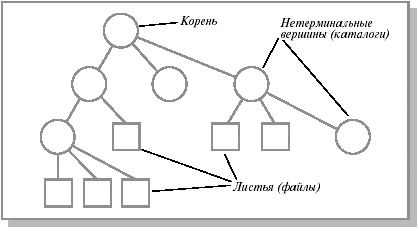

1 Понятие файловой системы
Файловая система
Файловая система - это часть операционной системы, назначение которой состоит в том, чтобы организовать эффективную работу с данными, хранящимися во внешней памяти, и обеспечить пользователю удобный интерфейс при работе с такими данными.
Файловая система представляет собой абстрактный слой для предоставления пользователю удобного доступа к данным и выполнения им действий с этими данными.
Центральным понятием ФС является файл, представляющий собой некоторую поименованную совокупность данных. С точки зрения пользователя файл представляет собой хранилище однородной информации. Например, файлы делят на текстовые, графические, звуковые и т.д.
С точки зрения операционной системы, файл - это набор связанных блоков (кластеров), образующих цепочку (списокa).
Файловая система позволяет при помощи системы справочников (каталогов, директорий) связать уникальное имя файла с блоками вторичной памяти, содержащими данные файла.
Иерархическая структура каталогов, используемая для управления файлами, может служить другим примером индексной структуры. В этом случае каталоги или папки играют роль индексов, каждый из которых содержит ссылки на свои подкаталоги. С этой точки зрения вся файловая система компьютера представляет собой большой индексированный файл. Помимо собственно файлов и структур данных, используемых для управления файлами (каталоги, дескрипторы файлов, различные таблицы распределения внешней памяти), понятие "файловая система" включает программные средства, реализующие различные операции над файлами.
Функции файловой системы
- Идентификация файлов. Связывание имени файла с выделенным ему пространством внешней памяти.
- Распределение внешней памяти между файлами. Для работы с конкретным файлом пользователю не требуется иметь информацию о местоположении этого файла на внешнем носителе информации. Например, для того чтобы загрузить документ в редактор с жесткого диска, нам не нужно знать, на какой стороне какого магнитного диска, на каком цилиндре и в каком секторе находится данный документ.
- Обеспечение надежности и отказоустойчивости. Стоимость информации может во много раз превышать стоимость компьютера.
- Обеспечение защиты от несанкционированного доступа.
- Обеспечение совместного доступа к файлам, так чтобы пользователю не приходилось прилагать специальных усилий по обеспечению синхронизации доступа.
- Обеспечение высокой производительности
2 Общие сведения о файлах
2.1 Имена файлов
Файлы представляют собой абстрактные объекты. Их задача - хранить информацию, скрывая от пользователя детали работы с устройствами. Когда процесс создает файл, он дает ему имя. После завершения процесса файл продолжает существовать и через свое имя может быть доступен другим процессам.
Правила именования файлов зависят от ОС. Многие ОС поддерживают имена из двух частей (имя+расширение), например progr.c (файл, содержащий текст программы на языке Си) или autoexec.bat (файл, содержащий команды интерпретатора командного языка).
Тип расширения файла позволяет ОС организовать работу с ним различных прикладных программ в соответствии с заранее оговоренными соглашениями. Обычно ОС накладывают некоторые ограничения, как на используемые в имени символы, так и на длину имени файла. В соответствии со стандартом POSIX, популярные ОС оперируют удобными для пользователя длинными именами (до 255 символов).
2.2 Типы файлов
Основные типы файлов:
- регулярные (обычные) файлы
- директории (справочники, каталоги).
- специальные файлы (устройства, ссылки в UNIX).
Обычные файлы содержат пользовательскую информацию. Директории - системные файлы, поддерживающие структуру файловой системы. В каталоге содержится перечень входящих в него файлов и устанавливается соответствие между файлами и их характеристиками (атрибутами). .
Хотя внутри подсистемы управления файлами обычный файл представляется в виде набора блоков внешней памяти, для пользователей обеспечивается представление файла в виде линейной последовательности байтов.
Такое представление позволяет использовать абстракцию файла при работе с внешними устройствами, при организации межпроцессных взаимодействий и т. д.
Так, например, клавиатура обычно рассматривается как текстовый файл, из которого компьютер получает данные в символьном формате. Поэтому иногда к файлам приписывают другие объекты ОС, например специальные символьные файлы и специальные блочные файлы, именованные каналы и сокеты, имеющие файловый интерфейс.
Обычные (или регулярные) файлы реально представляют собой набор блоков (возможно, пустой) на устройстве внешней памяти, на котором поддерживается файловая система. Такие файлы могут содержать как текстовую информацию (обычно в формате ASCII), так и произвольную двоичную (бинарную) информацию.
Текстовые файлы содержат символьные строки, которые можно распечатать, увидеть на экране или редактировать обычным текстовым редактором.
Другой тип файлов - нетекстовые, или бинарные, файлы. Обычно они имеют некоторую внутреннюю структуру. Например, исполняемый файл в ОС Unix имеет пять секций: заголовок, текст, данные, биты реаллокации и символьную таблицу. ОС выполняет файл, только если он имеет нужный формат. Другим примером бинарного файла может быть архивный файл. Типизация файлов не слишком строгая.
Обычно прикладные программы, работающие с файлами, распознают тип файла по его имени в соответствии с общепринятыми соглашениями. Например, файлы с расширениями .c, .pas, .txt - ASCII-файлы, файлы с расширениями .exe - выполнимые, файлы с расширениями .obj, .zip - бинарные и т. д.
2.3 Атрибуты файлов
Кроме имени ОС часто связывают с каждым файлом и другую информацию, например дату модификации, размер и т. д. Эти другие характеристики файлов называются атрибутами.
Список атрибутов в разных ОС может варьироваться. Обычно он содержит следующие элементы:
- основную информацию (имя, тип файла),
- адресную информацию (устройство, начальный адрес, размер),
- информацию об управлении доступом (владелец, допустимые операции)
- информацию об использовании (даты создания, последнего чтения, модификации и др.).
Список атрибутов обычно хранится в структуре директорий или других структурах, обеспечивающих доступ к данным файла.
2.4 Операции над файлами
При разрабоке прогрммы, программист может использовать следующие операции:
- Создание файла, не содержащего данных. Смысл данного вызова - объявить, что файл существует, и присвоить ему ряд атрибутов. При этом выделяется место для файла на диске и вносится запись в каталог.
- Удаление файла и освобождение занимаемого им дискового пространства.
- Открытие файла. Перед использованием файла процесс должен его открыть. Цель данного системного вызова - разрешить системе проанализировать атрибуты файла и проверить права доступа к нему, а также считать в оперативную память список адресов блоков файла для быстрого доступа к его данным. Открытие файла является процедурой создания дескриптора или управляющего блока файла. Дескриптор (описатель) файла хранит всю информацию о нем. Иногда, в соответствии с парадигмой, принятой в языках программирования, под дескриптором понимается альтернативное имя файла или указатель на описание файла в таблице открытых файлов, используемый при последующей работе с файлом . Например, на языке Cи операция открытия файла fd=open(pathname,flags,modes); возвращает дескриптор fd, который может быть задействован при выполнении операций чтения (read(fd,buffer,count); ) или записи.
- Закрытие файла. Если работа с файлом завершена, его атрибуты и адреса блоков на диске больше не нужны. В этом случае файл нужно закрыть, чтобы освободить место во внутренних таблицах файловой системы.
- Позиционирование. Дает возможность специфицировать место внутри файла, откуда будет производиться считывание (или запись) данных, то есть задать текущую позицию.
- Чтение данных из файла. Обычно это делается с текущей позиции. Пользователь должен задать объем считываемых данных и предоставить для них буфер в оперативной памяти.
- Запись данных в файл с текущей позиции. Если текущая позиция находится в конце файла, его размер увеличивается, в противном случае запись осуществляется на место имеющихся данных, которые, таким образом, теряются.
3 Директории(папки)
3.1 Общие сведения о директориях
Директории
Количество файлов на компьютере может быть большим. Отдельные системы хранят тысячи файлов, занимающие сотни гигабайтов дискового пространства. Эффективное управление этими данными подразумевает наличие в них четкой логической структуры. Все современные файловые системы поддерживают многоуровневое именование файлов за счет наличия во внешней памяти дополнительных файлов со специальной структурой - каталогов (или директорий).
Каждый каталог содержит список каталогов и/или файлов, содержащихся в данном каталоге. Каталоги имеют один и тот же внутренний формат, где каждому файлу соответствует одна запись в файле директории.
Число директорий зависит от системы. В ранних ОС имелась только одна корневая директория, затем появились директории для пользователей (по одной директории на пользователя). В современных ОС используется произвольная структура дерева директорий.
Таким образом, файлы на диске образуют иерархическую древовидную структуру:

Существует несколько эквивалентных способов изображения дерева. Структура перевернутого дерева, приведенного на рисунке, наиболее распространена. Верхнюю вершину называют корнем. Если элемент дерева не может иметь потомков, он называется терминальной вершиной или листом (в данном случае является файлом). Нелистовые вершины - справочники или каталоги содержат списки листовых и нелистовых вершин. Путь от корня к файлу однозначно определяет файл.
Внутри одного каталога имена листовых файлов уникальны. Имена файлов, находящихся в разных каталогах, могут совпадать. Для того чтобы однозначно определить файл по его имени (избежать коллизии имен), принято именовать файл так называемым абсолютным или полным именем (pathname), состоящим из списка имен вложенных каталогов, по которому можно найти путь от корня к файлу плюс имя файла в каталоге, непосредственно содержащем данный файл.
Полное имя включает цепочку имен - путь к файлу, например
/usr/games/doom
Такие имена уникальны. Компоненты пути разделяют различными символами: "/" (слэш) в Unix или обратными слэшем в MS-DOS (в Multics - ">"). Таким образом, использование древовидных каталогов минимизирует сложность назначения уникальных имен.
Указывать полное имя не всегда удобно, поэтому применяют другой способ задания имени - относительный путь к файлу. Он использует концепцию рабочей или текущей директории, которая обычно входит в состав атрибутов процесса, работающего с данным файлом. Тогда на файлы в такой директории можно ссылаться только по имени, при этом поиск файла будет осуществляться в рабочем каталоге. Это удобнее, но, по существу, то же самое, что и абсолютная форма.
Для получения доступа к файлу и локализации его блоков система должна выполнить навигацию по каталогам.
Рассмотрим для примера путь /usr/linux/progr.c. Алгоритм одинаков для всех иерархических систем.
- В фиксированном месте на диске находится корневая директория
- Находится компонент пути usr, т. е. в корневой директории ищется файл /usr.
- Исследуя этот файл, система понимает, что данный файл является каталогом, и блоки его данных рассматривает как список файлов и ищет следующий компонент linux в нем.
- Из строки для linux находится файл, соответствующий компоненту usr/linux/.
- Затем находится компонент progr.c, который открывается, заносится в таблицу открытых файлов и сохраняется в ней до закрытия файла.
Многие прикладные программы работают с файлами, находящимися в текущей директории, не указывая явным образом ее имени. Это дает пользователю возможность произвольным образом именовать каталоги, содержащие различные программные пакеты. Для реализации этой возможности в большинстве ОС, поддерживающих иерархическую структуру директорий, используется обозначение "." - для текущей директории и ".." - для родительской.
3.2 Разделы и имена файлов
В некоторых системах управления файлами требуется, чтобы каждый архив файлов целиком располагался на одном диске (разделе диска). В этом случае полное имя файла начинается с имени дискового устройства, на котором установлен соответствующий диск (буквы диска). Например, c:\util\nu\ndd.exe. Такой способ именования используется в файловых системах DEC и Microsoft.
В ОС Unix предполагается наличие нескольких архивов файлов, каждый на своем разделе, один из которых считается корневым. После запуска системы можно "смонтировать" корневую файловую систему и ряд изолированных файловых систем в одну общую файловую систему.
Технически это осуществляется с помощью создания в корневой файловой системе специальных пустых каталогов. Специальный системный вызов mount ОС Unix позволяет подключить к одному из этих пустых каталогов корневой каталог указанного архива файлов. После монтирования общей файловой системы именование файлов производится так же, как если бы она с самого начала была централизованной. Задачей ОС является беспрепятственный проход точки монтирования при получении доступа к файлу по цепочке имен. Если учесть, что обычно монтирование файловой системы производится при загрузке системы, пользователи ОС Unix обычно и не задумываются о происхождении общей файловой системы.
3.3 Операции над директориями
Перечислим основные операции над директориями, которые ожет использовть прораммист ри разработке программы:
- Создание директории. Вновь созданная директория включает записи с именами '.' и '..', однако считается пустой.
- Удаление директории. Удалена может быть только пустая директория.
- Открытие директории для последующего чтения. Hапример, чтобы перечислить файлы, входящие в директорию, процесс должен открыть директорию и считать имена всех файлов, которые она включает.
- Закрытие директории после ее чтения для освобождения места во внутренних системных таблицах.
- Поиск. Данный системный вызов возвращает содержимое текущей записи в открытой директории. Вообще говоря, для этих целей может использоваться системный вызов Read, но в этом случае от программиста потребуется знание внутренней структуры директории.
- Получение списка файлов в каталоге.
- Переименование. Имена директорий можно менять, как и имена файлов.
- Создание файла. При создании нового файла необходимо добавить в каталог соответствующий элемент.
- Удаление файла. Удаление из каталога соответствующего элемента. Если удаляемый файл присутствует только в одной директории, то он вообще удаляется из файловой системы, в противном случае система ограничивается только удалением специфицируемой записи.
4 Защита файлов и директорий
Права доступа
Наличие в системе многих пользователей предполагает организацию контролируемого доступа к файлам. Выполнение любой операции над файлом должно быть разрешено только в случае наличия у пользователя соответствующих привилегий.
Обычно контролируются следующие операции: чтение, запись и выполнение. Другие операции, например копирование файлов или их переименование, также могут контролироваться. Однако они чаще реализуются через перечисленные. Так, операцию копирования файлов можно представить как операцию чтения и последующую операцию записи.
Hаиболее общий подход к защите файлов от несанкционированного использования - сделать доступ зависящим от идентификатора пользователя, то есть связать с каждым файлом или директорией список прав доступа (access control list), где перечислены имена пользователей и типы разрешенных для них способов доступа к файлу.
Любой запрос на выполнение операции сверяется с таким списком. Основная проблема реализации данного способа - список может быть длинным. Чтобы разрешить всем пользователям читать файл, необходимо всех их внести в список. У такой техники есть два нежелательных следствия.
- Конструирование подобного списка может оказаться сложной задачей, особенно если мы не знаем заранее пользователей системы.
- Запись в директории должна иметь переменный размер (включать список потенциальных пользователей).
Для решения этих проблем создают классификации пользователей, например, в ОС Unix все пользователи разделены на три группы.
- Владелец (Owner).
- Группа (Group). Hабор пользователей, разделяющих файл и нуждающихся в типовом способе доступа к нему.
- Остальные (Univers).
Это позволяет реализовать конденсированную версию списка прав доступа. В рамках такой ограниченной классификации задаются только три поля (по одному для каждой группы) для каждой контролируемой операции. В итоге в Unix операции чтения, записи и исполнения контролируются при помощи 9 бит (rwxrwxrwx).
Вопросы для самоконтроля
© 2012 Штанюк А.А.